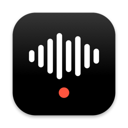

Said
Nagrywaj głos jednym kliknięciem w pasku menu i dostań gotową transkrypcję. Wszystko zostaje na Twoim Macu.
curl -fsSL https://raw.githubusercontent.com/rajanbor/said/main/install.sh | bash
Wklej do Terminala. Komenda pobiera kod, buduje aplikację na Twoim Macu i instaluje ją w Aplikacjach. Wymaga macOS 14+ i narzędzi Xcode Command Line Tools (instalator zaproponuje je sam). Uruchom ponownie, żeby zaktualizować.
- Pasek menu, bez Docka. Said żyje przy zegarze i nie zajmuje miejsca w Docku.
- Pływająca pastylka. Mała czarna pastylka z animacją głosu. Przeciągnij ją, gdzie chcesz.
- Lokalna transkrypcja. Whisper large-v3 turbo na Neural Engine. Polski, angielski i inne języki.
- Folder na każde nagranie.
~/Music/Said/<data>/z plikiem audio i transkrypcją w Markdown. - Zero chmury. Internet jest potrzebny tylko raz, do pobrania modelu (~630 MB).